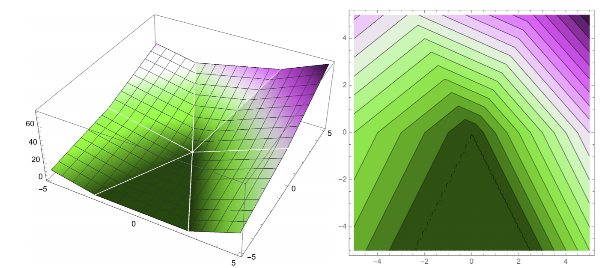

Perceptron Algorithm, Part 2
Contents
Perceptron Algorithm, Part 2¶
Before we plunge on, let’s review our goal.
Remember that the perceptron algorithm is an algorithm for learning an underlying linear decision function:
This function effectively makes our decision boundary (points where \(f(x) = 0\)) and classifier.
Our goal is to learn the weights \(w\) that minimizes the risk function for the associated classifier: \(\underset{w}{\arg\min} R(w)\). Specifically, our risk function in this case is \(R(w) = \sum_{i \in V}-y_iX_i \cdot w\), where \(V = \{i : y_iX_i\cdot w < 0\}\): indices of all misclassified data points in the training set.
X-space vs. W-space¶
Remember that we want to find an optimal separating hyperplane in feature space, which may also be referred to as x-space. Alternatively, we want to find the optimal normal vector. This is equivalent to finding an optimal point in weight space, or w-space.
For each hyperplane in x-space, there is an associated point in w-space. For each point in x-space, then there is an associated constraint hyperplane in w-space. This type of transformation is extremely common not just in machine learning but mathematics in general, and is important to understand.
So all we really need to get out of this: a point in x-space transforms to a normal vector (hyperplane) in w-space, and a normal vector in w-space (a point) translates to a hyperplane in x-space. A sample point in x-space transforms to the hyperplane in w-space whose normal vector is the sample point.
Note
This symmetry between points and hyperplanes in x-space and w-space exists for linear decision boundaries, but will NOT necessarily exist for the more complex DBs we’ll learn later in the book.
So if we want to enforce the inequality \(x \cdot w \ge 0\), then we have two possible interpretations, one for x-space and one for w-space:
In x-space, \(x\) should be on the same side of the hyperplane \(H = \{z: w \cdot z = 0\}\): a hyperplane determined by normal vector \(w\).
In w-space, \(w\) should be on the same side of the hyperplane \(H = \{z: w \cdot z = 0\}\): a hyperplane determined by normal vector \(x\).
After accounting for all of these constraints, for any set of points in x-space, there is an associated “green region” in w-space where our optimal weight vector is allowed to be. Choosing a weight vector in that region will result in a hyperplane which, when transformed back to x-space, will guarantee separation of points.
Let’s visualize our risk function \(R(w)\) in weight space, in 3D. On the left is the 3D plot (z-axis is values of \(R(w)\), and xy axes is the weight space). On the right is the isocontour plot.
{kind=link}
On the left, we want a point \(w = (w_1, w_2)\) that minimizes \(R(w)\). How can we find such a point in general? We apply gradient descent on our risk function \(R\).
Gradient Descent¶
Gradient descent is the algorithm that we apply to find minima of multivariate functions. Here’s how it works.
First, we start off at some starting point \(w\). Then, we find the gradient of \(R\) with respect to \(w\), denoted as \(\nabla_wR(w)\): this is the direction of steepest ascent. We are essentially calculating the slope of the curve at our point, except now we’re working with probably much more than 2 dimensions. We then take a step in the opposite direction of the gradient, so that we’re descending instead of ascending.
Remember that the gradient of a vector-input function \(R(w)\) is a vector of all the partial derivatives of \(R\):
It is also easy to work out that the gradient of a dot product \(\nabla_w(z \cdot w) = z\).
So to calculate the gradient of our perceptron risk function, we can apply the two equations above:
And since we take the negative of the gradient, we calculate \(\sum_{i \in V}y_iX_i\) at each iteration of gradient descent to “walk downhill” on the risk function, in the direction of steepest descent.
So overall, we can summarize gradient descent in the perceptron algorithm by one update rule:
where \(w^{(t)}\) is the calculated weights from GD at iteration \(t\). We stop gradient descent when we converge: in other words, doing more iterations doesn’t change \(w\) much at all.
Note
The \(\epsilon\) you see in the above equation is called the learning rate or step size, and is usually chosen empirically: no general rule exists for picking one. Higher step sizes will mean faster changes to \(w\), but might “overshoot” the true minima that we want. However, we will always converge if our points are linearly separable, no matter the step size.
So if the points are truly linearly separable, the perceptron algorithm will guarantee to find a weight vector \(w\) that will do the job.
So now we’ve pretty much covered the entirety of the perceptron algorithm: given our dataset, we fit our linear model to it by finding the optimal \(w\) through gradient descent on \(R(w)\).
One big problem with the perceptron algorithm, though, is that it’s very slow! Each step takes \(O(nd)\) time, where \(n\) is the number of sample points and \(d\) is the number of features. How can we fix this?
Stochastic Gradient Descent¶
Remember that in normal gradient descent, we need to calculate the gradient as \(\sum_{i \in V}y_iX_i\). This requires us to sum through all misclassified points at each iteration. Stochastic gradient descent improves on this time sink drastically by only requiring us to pick ONE misclassified point \(X_i\) at each iteration. Then, instead of doing gradient descent on \(R\), all we have to do is gradient descent on the loss function \(L(X_i \cdot w, y_i)\).
Now, each iteration of gradient descent takes around \(O(d)\) time instead of \(O(nd)\): a MASSIVE improvement, especially with a very large dataset! However, do note there’s always a tradeoff: we’re not using complete information of all misclassified points, so we rely more on chance to get the optimal \(w\) we want.
Note
Stochastic gradient descent does not work for every problem that gradient descent works for. The perceptron risk function happens to have special properties that guarantee that SGD will always succeed. More on this in later chapters.